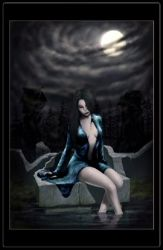

Les légendes de Kirin Tor
==> Afficher les personnages de Néfi
Caitlyn
Age : Environ 25 ans
Sexe : Femme
Race : Humain
Faction : Alliance
Formation : Démoniste
Description :
Je ne me souviens pas de mon enfance. Mes premiers souvenirs datent d'une dizaine d'années lorsque j'ouvris les yeux sur un visage bouffis, aux traits marqués par le temps. D'après ce petit bout de femme, elle m'avait trouvée au beau milieu de la route qui joignait Thelsamar à Menethil, le visage contre terre, inerte. Me croyant blessée à mort par une bête, elle faillit passer son chemin mais un faible gémissement lui fit arrêter le pas de sa mule. De cette rencontre, je n'en garde aucune trace, malgré les nombreuses fois où j'ouvris les yeux pour lui débiter des torrents de paroles sans queue ni tête, où je mentionnais dragons et chimères, femmes crachant feu et lumières, jusqu'à l'effrayer. Elle m'avait recueillie dans sa demeure modeste, nourrie, lavée, pendant que mon esprit errait entre le monde des vivants et des morts, altéré par la folie.
Lorsqu'au bout de quelques mois je m'éveillai pour de bon, je crû que ma tête étais enserrée dans un étau tant elle me faisait mal. Qui j'étais, d'où je venais, je n'en savais strictement rien. D'après la naine dont l'accent et l'expression me faisaient souvent sourire, mon prénom devait être Caitlyn car je m'étais présentée ainsi, au cours de mes fréquents "réveils". Mon nom, quant-à lui, est un emprunt de celle que je considère comme une mère et qui me traita les années qui suivirent comme la fille qu'elle n'a jamais eu.
Lorsque la mort me l'a prise, c'est vers une vie d'ermite que je me tournai, résolue à découvrir mon passé, et ces noms.... ces noms qui trottaient dans ma tête sans qu'aucun ne puisse me dire d'où ils viennent.
Plus d'infos sur Caitlyn >>>Lire les 3 récits de Caitlyn >>>